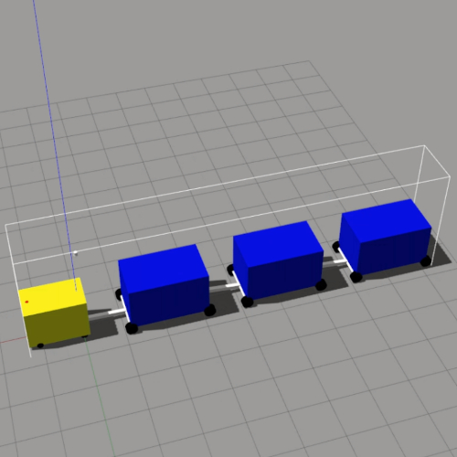

SIERA.AI
Autonomous Robotics Engineer
I joined SIERA.AI, which was known as Stocked Robotics, Inc. then, as an autonomous robotics engineer in March 2019. As primarily a software company, SIERA.AI provides software defined solutions to optimize operations in the logistics, warehousing and manufacturing industry, to name a few.
Background
The increasing occurence of workplace related injuries especially in warehouses has driven the need for innovative solutions to improve workplace safety. One common factor leading to these injuries stem from worker fatigue, as mundane and repetitive work can cause complacency which lead to accidents. Thus, warehouse autonomous mobile robots (AMRs) can designate jobs that require more creativity and problem solving skills to the workers, while they take on the dull, dirty, and dangerous work.
My Work and Experience



At SIERA, I was in charge of the research and development efforts in both robot autonomy and simulations: I led the project in developing an electric tugger into an AMR capable of tugging 10,000 lbs loads, as well as established the company's simulation stack on AWS RoboMaker. As a result of my work, the AMR was able to autonomously navigate in a infrastructure-free (i.e., without magnetic tape or laser guidance) >60,000 sq. ft. warehouse with a ±30 cm repeatability, traveling smoothly at a maximum speed of 1.5 m/s with 3,000 lbs load.
In terms of robot autonomy, I was heaviliy involved in the design of software and workflows for AMR deployment involving SLAM, localization, and planning. On the SLAM part, I used sensor data obtained from the AMR's touring of the facility, then meticulously tuned Google Cartographer parameters to produce high quality maps. The map is integrated either with the AMCL or the Google Cartographer localization algorithm which ensures that the robot has a good understanding of its position. My efforts in fusing different sensor and odometry measurements helped improve the quality of the localization as well. Finally, the robot plans its journey to a assigned goal via the integration of the ROS navigation stack, which I adapted to optimize the robot's drive behavior.
Additionally, as the simulation lead, I spearheaded the company's robotic simulation efforts, which, among other things, included robot modeling, environment construction, plugin development, and worfklow design. Beyond that, I utilized resources like AWS RoboMaker to integrate a cloud-based simulated testing environment for the company, which gave us the ability to run various test cases on newly developed robotic software for extensive periods before implementing it on the actual robot for further testing.
I was also briefly involved in developing a user-facing application for the control of the AMR. This app provides an interface to our customers, which are the operators and warehouse managers, to assign tasks and workflows to the robot. In that project, I spent about 2 weeks brushing up my MERN stack skills before proceeding to develop the app. The final product was an app that allowed users to fully manage the robot, from executing tasks to recharging its batteries to powering itself off.